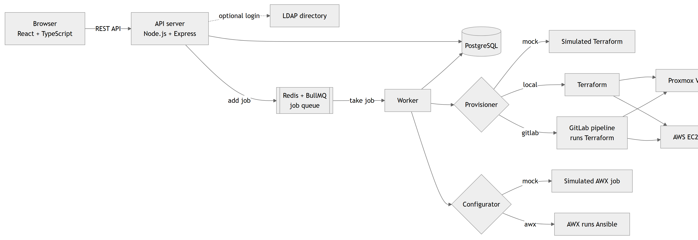
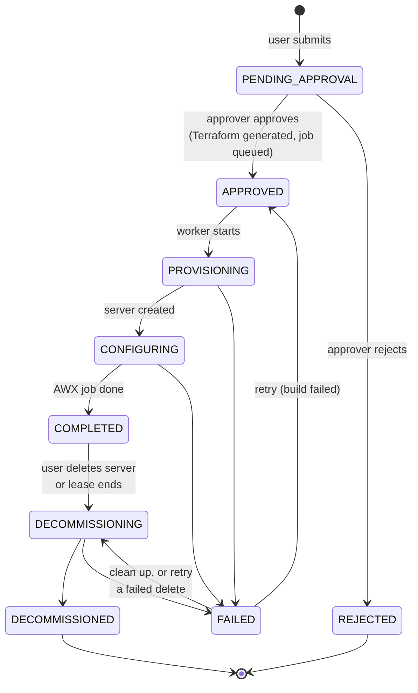
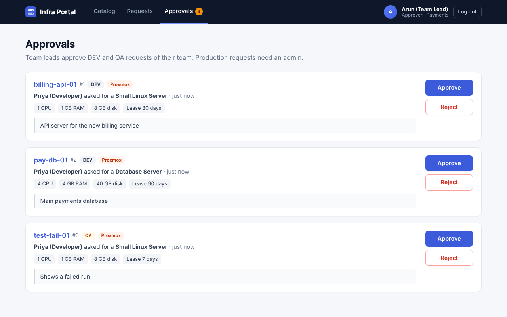
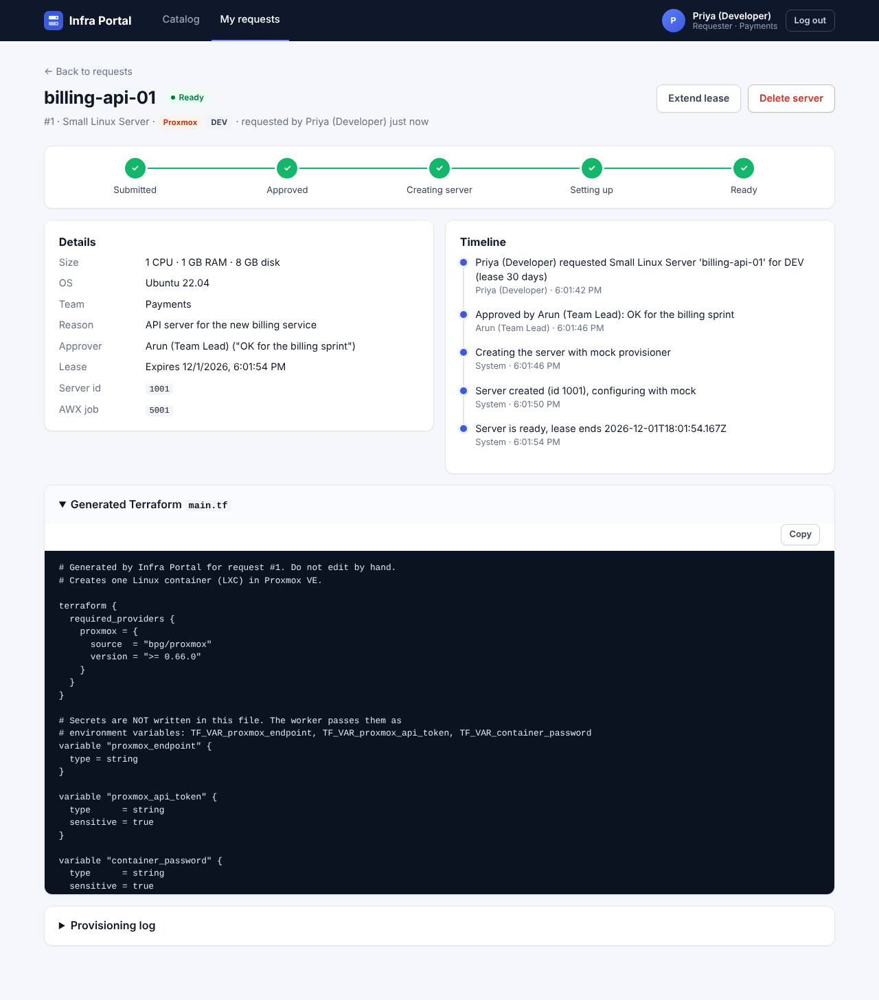
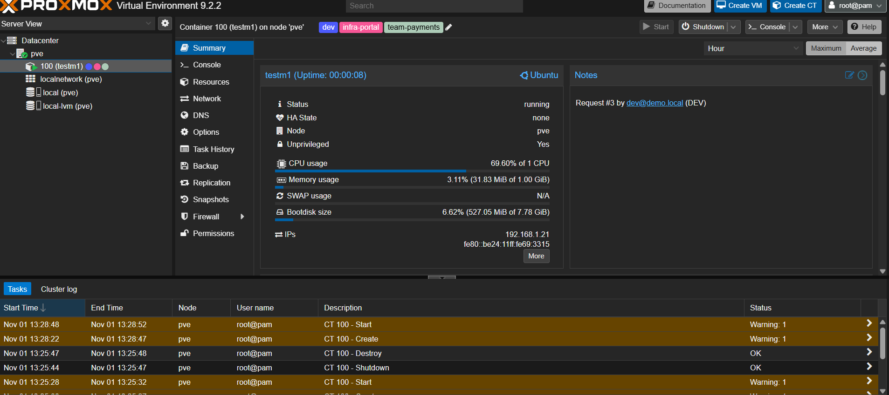

A self-service portal for requesting servers on Proxmox VE and AWS
Muthu · November 2026 · github.com/Muthujar/infra-portal
Goal: a catalog, an approval step and automation, like VMware vRealize Automation (Aria).
Picks a server, environment and lease.
Validates the input and team quota.
Approves it. PROD needs an admin. Terraform is generated.
Runs Terraform, then configures the server.
Every change is in the audit log. Servers are deleted when their lease ends.





Created by Terraform in about 40 seconds, then deleted on decommission.
Requester, approver, admin. PROD needs an admin.
CPU, RAM and disk limits for each team.
Who did what, and when.
Expired servers are deleted automatically.
Never saved in Terraform files or the database.
Directory groups set role and team.
| Part | Status |
|---|---|
| Portal, workflow, roles, quotas, leases, audit log | Done |
| Terraform generation for Proxmox and AWS | Done |
| Provisioning on real Proxmox VE | Tested |
| LDAP login | Tested |
| 44 automated tests | Passing |
| CI for the backend, frontend, Terraform and Docker | Passing |
| Area | How it would be done |
|---|---|
| GitLab CI | Point the built connector at the company GitLab, with a runner inside the network |
| AWX | Point the built connector at the company AWX, and add a dynamic inventory |
| AWS | Add a company AWS account and turn on apply |
| Company login | Connect the company directory or identity provider, and reuse the role mapping |
| State and secrets | Move Terraform state to shared storage, and secrets to a vault |
The demo uses mock provisioning and configuration, so these need a full run in a company environment.